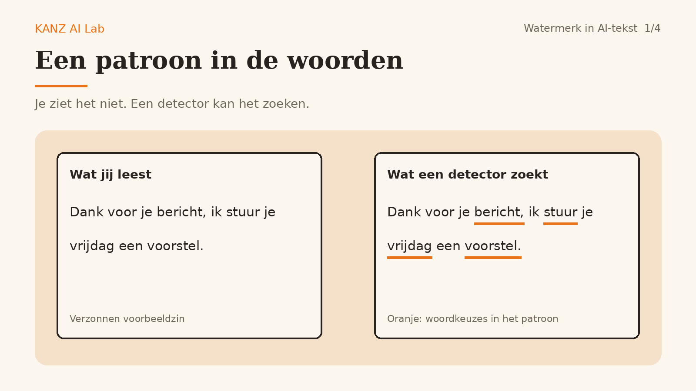
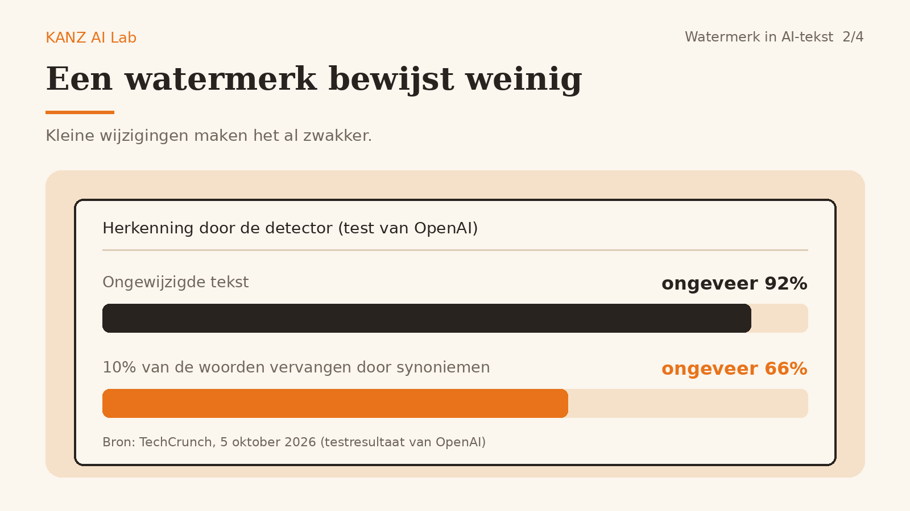
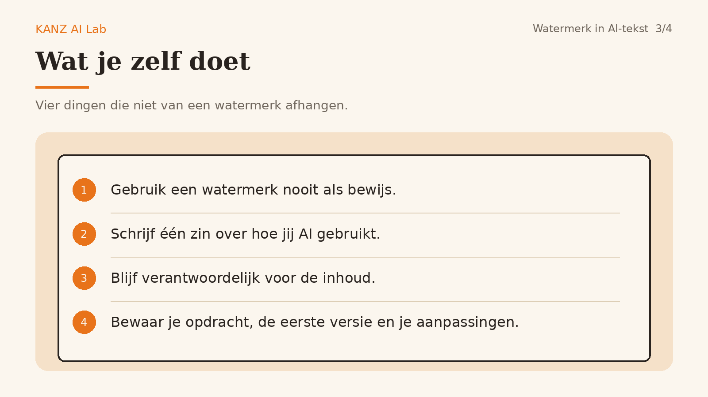
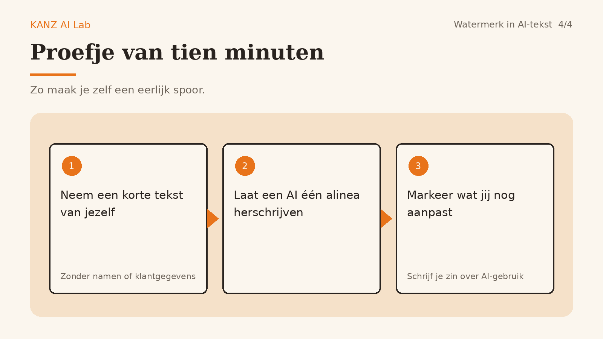

Een onzichtbaar watermerk in AI-tekst: wat het wel en niet bewijst
OpenAI gaat in de EU een onzichtbaar patroon in de tekst van ChatGPT en Codex stoppen. Het heet textGrain en is bedoeld om AI-tekst herkenbaar te maken. Wie met AI schrijft, vraagt zich dan af: moet ik mijn teksten aanpassen, en kan ik er iets mee bewijzen? Kort antwoord: nee, en nee. Hieronder lees je waarom en wat je wel kunt doen.

Wat het watermerk is
Het is geen verborgen teken of spatie. Het model kiest zijn woorden net iets anders, zodat er over een hele tekst een patroon ontstaat dat een detector kan herkennen. Het patroon zit in de woorden zelf en reist dus mee als je tekst kopieert. De detector is voorlopig alleen beschikbaar voor goedgekeurde onderzoekers en organisaties. Jij kunt je eigen tekst er niet mee controleren.
Wat het niet bewijst

Ontbreekt het watermerk, dan is de tekst niet automatisch door een mens geschreven. Dat zegt OpenAI zelf: de tekst kan te kort of te sterk bewerkt zijn, of van een ander AI-model komen.
Aanwezig of niet zegt niets over hoeveel jij er zelf aan hebt gedaan. Een watermerk laat hooguit zien dat een model meeschreef, niet hoeveel oordeel en bewerking erbij zat.
Het is zwak bij kleine wijzigingen. In een test van OpenAI daalde de herkenning van ongeveer 92 procent naar 66 procent nadat 10 procent van de woorden door synoniemen was vervangen. Korte stukken, rekenantwoorden en vertalingen zijn lastiger te herkennen.
Wat je zelf doet

Gebruik een watermerk nooit als bewijs. Niet tegenover jezelf ("dit is van mij") en niet tegenover een klant ("hier zit geen AI in").
Schrijf één zin over hoe jij AI gebruikt, bijvoorbeeld: "Ik laat AI een eerste versie maken en schrijf en controleer de definitieve tekst zelf." Gebruik die zin als je klant ernaar vraagt.
Blijf verantwoordelijk voor de inhoud. Controleer feiten, namen en toon, ook als de tekst er goed uitziet.
Bewaar je eigen sporen: je opdracht, de eerste versie van de AI en jouw aanpassingen. Dan kun je laten zien wat jij hebt gedaan.
Proefje van tien minuten

Neem een korte tekst van jezelf, zonder namen of klantgegevens. Laat een AI één alinea herschrijven. Markeer wat jij daarna nog hebt aangepast. Schrijf daarna je zin uit stap 2 op. Je hebt nu een kleine, eerlijke vorm van bewijs die niet afhangt van een watermerk.
Bronnen
OpenAI, "Provenance signals in OpenAI-generated content" (helpartikel, 5 oktober 2026): help.openai.com
TechCrunch, "OpenAI will start watermarking ChatGPT's text in the EU" (5 oktober 2026): techcrunch.com
OpenAI, "Our approach to EU text provenance rules" (5 oktober 2026): openai.com
Algemene informatie, geen juridisch advies. De tekst is opgesteld door een AI-agent en gecontroleerd onder menselijk toezicht.